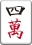
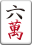
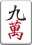
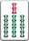

麻雀について
4人用のテーブルゲームであり、34種類136枚の牌を使用するのが一般です。
また、その他、各自の点数を表示する点棒、およびサイコロ等を用いてゲームを行います。
四人麻雀の他にも、三人麻雀の愛好者も多く、この場合は牌の数やルールも四人麻雀の場合とは異なります。
このページでは、四人麻雀のゲーム手順、ルールを簡単に説明しています。
4人用のテーブルゲームであり、34種類136枚の牌を使用するのが一般です。
また、その他、各自の点数を表示する点棒、およびサイコロ等を用いてゲームを行います。
四人麻雀の他にも、三人麻雀の愛好者も多く、この場合は牌の数やルールも四人麻雀の場合とは異なります。
このページでは、四人麻雀のゲーム手順、ルールを簡単に説明しています。
麻雀牌は全部で136枚となります。全34種類が4枚づつで全部で136枚の牌を使ったゲームです。
萬子、索子、筒子は数牌と呼ばれます。
1、9の数牌のみは老頭牌と言い、1、9の数牌と字牌の組み合わせを一九字牌・ヤオチューハイと言います。
逆に、2〜8の数牌は断ヤオ九牌(タンヤオハイ)と言います。
下は牌一覧です。
 | イーワン |
 | リャンワン |
 | サンワン |
|  | スーワン |
 | ウーワン |
|  | ローワン |
 | チーワン |
 | パーワン |
|  | キューワン |
 | イーソウ |
 | リャンソウ |
 | サンソウ |
 | スーソウ |
 | ウーソウ |
 | ローソウ |
|  | チーソウ |
| パーソウ | |
 | キューソウ |
 | イーピン |
 | リャンピン |
| サンピン | |
 | スーピン |
 | ウーピン |
 | ローピン |
 | チーピン |
 | パーピン |
 | キューピン |
 | トン |
 | ナン |
 | シャー |
 | ペー |
 | ハク |
 | ハツ |
 | チュン |
麻雀は、牌を組み合わせて一般的に「あがり」と呼ばれる和了(ホーラ)を目指し、和了することで得点を得ることができます。
あがりは、4つの面子と雀頭からできた14枚の牌の組み合わせができることで成立します。この時、あがり役といて成立する役を含む手牌でない場合はあがることができません。ただし、このような組み合わせではない特殊な役もあるため注意が必要です。
面子には順子(シュンツ)と刻子(コーツ)があります。
順子は、同じ種類の牌が3つ続いている数牌の面子のことを言います。よく間違うのが字牌でも順子を作れると感じてしまうことです。順子は数牌でしか作ることができないことに注意しましょう。
刻子は、同じ牌を3つ揃ろっている面子のことを言います。手牌で作った刻子を暗刻(アンコー)、鳴いて作った刻子を明刻(ミンコー)と言います。
例外として、同一牌4つの組み合わせで1つの面子となる槓子(カンツ)があります。手牌で作った槓子を暗槓(アンカン)、鳴いて作った槓子を明槓(ミンカン)と言います。
麻雀は面子4組と雀頭の計14牌があがりの形です。待ち番は13牌であり、ツモ(自分の番に1牌持ってくること)ってから切るまでが、14牌です。残り1枚であがれる形をテンパイといいます
待ち方には様々な種類があります。
雀頭待ちの単騎(タンキ)、順子となる両端の待ちの両面(リャンメン)、順子となる間の待ちの嵌張(カンチャン)、順子となる片方の端の待ち(1、2で3を待ってる状態など)の辺張(ペンチャン)、雀頭2つで刻子待ちのシャンポン、雀頭を両面でまつ両面単騎(ノベタン)、両面2つの複合で待つ三面待ち(サンメンチャン)、両面と単騎どちらでも和了できる変則サンメンチャン、国士無双の13面待ちなどがあります。多面張や変則待ちは最大9面待ちまであります。
下に代表的な単騎、両面、ノベタンの例を載せています。
和了にはツモとロンの2種類があり、ツモはテンパイの時に引いてきた牌であがることです。「ツモ」と宣言し、手牌を倒します。
ロンは、テンパイの時に相手の捨てる牌であがることです。相手が捨てた牌が自分のあがり牌だったときに「ロン」と宣言し、手牌を倒します。
役はあがったときの手牌の形で決まります。 役よりも先にルールを覚えることのほうを優先したほうが良いと思います。
麻雀では、複数の役を組み合わせる事で得点が上がっていきます。役は1翻（イーハン）、2翻（リャンハン）、3翻（サンハン）というように数えます。複数の役が手牌に含まれる場合は、それぞれの翻数を足して計算します。つまりより翻数の高い役を完成させるか、複数の役を組み合わせることで得点も高くなります。
麻雀役を覚える事が対戦する最低限の資格とも言えますが、 まず、局の進行を覚えることを優先した方が良いかと思います。
役一覧はこちら
ゲーム開始するときにドラを表示します。その牌の次の牌がドラになります。
ドラ表示牌が萬子の3ならばドラは萬子の4になります。筒子の9が表示牌の時はドラは筒子の1となります。また、風牌は東南西北の順番で、三元牌は白發中となります。
表示牌: ドラ:
表示牌: ドラ:
表示牌: ドラ:
表示牌: ドラ:
赤ドラと呼ばれる表示牌とは関係なくドラになる牌もあります。
また、リーチした人があがった場合、表示牌の下の牌をめくり、その次の牌が裏ドラとなります。
さらに、カンをすることで表示牌の右隣の牌をめくり、カンドラとして扱います。カンドラにもカン裏ドラがあります。
自分の手牌が後１つで揃うという時（テンパイ）に1000点を支払うことでリーチすることができ、一翻役が成立します。
1000点を支払うので持ち点が1000点ない時はリーチをかけることができません。
リーチをする時は、「リーチ」と宣言し、捨て牌を横向きに置きます。支払った1000点の棒は卓の中央に置きます。
リーチの時の捨て牌が他の人が鳴くことによって取られた場合、次の捨て牌を横向きに置きます。
リーチで1翻付くので点数アップが見込め、リーチ時のみ裏ドラをめくることができます。
リーチ宣言でテンパイしていることがバレます。さらに、宣言後は手牌の入れ替えが行えません。
※暗槓（アンカン）は可能です。
麻雀は、通常半荘（ハンチャン）を単位として競技されます。半荘は大きく前半と後半に区分され前半を東場（トンバ）、後半を南場（ナンバ）といいます。東場・南場はそれぞれ４つの局からなります。東1局から開始され、東4局が終了した後は南入（ナンニュウ）といって南1局に入り南4局で終了します。このとき、南4局はオーラスとも呼ばれます。
東風戦は、半荘ではなく東場だけで1試合とするルールです。試合時間が早い分短期決戦となります。
また、一荘戦（イーチャン）もあります。東、南、西、北の順で場が進みます。北4局で終了となります。
それぞれの局において、プレイヤーのうち1名が親になります。その他の3人は子と呼ばれます。
親は東家（トンチャ）とも呼ばれ他のプレイヤーを親から反時計回りに南家（ナンチャ）、西家（シャーチャ）、北家（ペーチャ）と呼びます。
各プレイヤーは、自分の左側のプレイヤーを上家（カミチャ）、右側のプレイヤーを下家（シモチャ）、そして正面のプレイヤーを対面（トイメン）と呼びます。また、自分以外のプレイヤーを他家（ターチャ）といいます。
ゲーム開始時の親を起家（チーチャ）と呼びます。ひとつの局が終了すると、それまで南家であったプレイヤーが次の局の親となります。このように、ゲームを通して親は反時計回りに移っていきます。
局の終了で親が移動しますが、その局の親がアガることで連荘（レンチャン）と呼ばれる局の継続が行われます。通常、局は0本場から始まり、連荘することで1本場、2本場と増えて行きます。例えば、東3局で親が3連荘していると東3局1本場となります。
連荘では、本場に応じた数の100点棒を置きます。この100点棒を場棒、積み棒と呼びます。なお、場棒は供託されたものではなく、親の持ち点の一部です。
連荘が起こった局では、和了ったときの点数に本場の数×300点が加算されます。ツモ和了の場合には、各自の支払う点数が本場の数×100点だけ増えます。なお、流局の場合にも本場数を1つ増やします。
起家を次の手順で決めます。
1.座席を決めます。座席は好きなように決めるか、裏向きにした東南西北の牌を選択して座席を決める方法などもあります。
2.座席決定時の「東」の位置に当たる者がサイコロを2つ振ります。
3.サイコロを振った本人から反時計まわりに数えて、サイコロの目の位置に当たるプレイヤーが仮親となります。
4.仮親がサイコロを2つ振ります。
5.仮親から反時計まわりに数えて、サイコロの目の位置に当たるプレイヤーが起家となります。
サイコロを1回振るだけで起家を決めてしまう場合もあります。
局の開始にあたって、牌を裏返して混ぜて牌山と呼ばれる牌の山を作ります。
その後、起家がサイコロを振って牌の開始位置を決めます。反時計回りに自分を1として数えたプレイヤーの前に置かれた牌山の右から数えた数と同じ数だけ進んだところから牌を取って行きます。
牌は、4つずつ起家から反時計回りに取っていき、12枚になったところで1枚ずつに変更して、親が14枚、子が13枚ずつ牌を取得します。この牌のことを配牌（ハイパイ）といいます。他のプレイヤーから見えないように正面に配置します。配牌からその後にわたって、手元にある牌を手牌といいます。
また、牌の開始位置から7つ分手前までの牌（合計14枚の牌）は王牌（ワンパイ）と呼ばれ、右から6枚目をドラ表示牌としてめくります。王牌はカンの時に使用します。ドラ表示牌から左の3枚がカンドラ、それ以降が嶺上牌、ドラ表示牌から右は海底牌となります。カンの時は嶺上牌をとってカンドラを1枚めくり、海底牌を1枚、牌山に加えます。
配牌が完了したらプレイ開始です。まず親は14枚の中から不要な牌を1枚捨てます。これを打牌といいます。
以後のプレイは、各プレイヤーが反時計まわりに順番に行います。親の次にプレイするのは親から見て右側のプレイヤー（下家）です。
各プレイヤーは、自分の順番がきたら山の端から牌を1枚取得します。これをツモといいます。
その後、不要な牌を1枚捨てます。
なお捨てた牌は表向きにして、河（ホー）と呼ばれるエリア（卓の中央付近）に並べます。
以降、順番にツモおよび打牌を繰り返し和了を目指します。
いずれかのプレイヤーが和了った場合、その局は終了します。
点数の計算後、親が和了った場合、連荘となります。子が和了った場合、親の下家が次の局の親です。これを親流れといいます。
誰も和了せずに牌山がなくなれば流局となります。流局の際に親がテンパイしていた場合も連荘します。これをテンパイ連荘といいます。逆に親がテンパイしていなければ親流れとなります。
流局時にテンパイしていなかった者は、聴牌していた者に合計3000点が移動するように点数を支払います。ノーテン罰符といいます。1人聴牌の場合は他の三人が1000点、2人聴牌の場合は他の二人が1500点支払います。
オーラスで親がアガって1位になっている場合、または子がアガった場合にゲームは終了となります。
ゲーム終了時の点数で順位を決めます。
また、ゲーム中に持ち点がマイナスになったプレイヤーがいる場合、ゲームはその時点で強制的に終了します。これをハコもしくはトビといいます。
麻雀は最初、ゲームがスタートする時は東場（トンバ）から始まります。この東場の時、場風は東です。
全員の親番が終われば南場（ナンバ）になり、場風は南となります。
東場の場合、東が刻子もしくは槓子として手牌に含まれる場合、場風牌（役牌）として1翻が成立します。
麻雀は親を東家とし、全員に東家のような東南西北の◯家というものが割り当てられます。
この東南西北を自風といい、この自風に対応する風牌が自風牌となります。
自風牌は場風牌と同じく役牌となり1翻が成立します。
自風が南の場合、南が自風牌となり、他家は南は自風牌とはなりません。
また、東場における東家のように、場風と自風が重なる場合があります。その場合、ダブル東のように2翻役として成立します。
役牌、ダブル東などは役一覧も参考にしてみてください。
役一覧はこちら
鳴きは、ポンやチーで他家の捨て牌を使うことです。
同時の鳴きはポンが有利であり、発声が早い人に適用されます。
また、誤発声は1000点が罰金としてとられるので注意しましょう。
鳴くと他家の捨て牌を利用して手牌を進められますが、門前ではなくなることに注意が必要です。リーチなど鳴くと成立しない役や食い下がりがある役があるので把握しておきましょう。
役一覧はこちら
ポンは、手牌に対子（同じ牌が２枚ある牌）がある時に行うことができます。
ポンは、自分以外の全ての他家から行うことができます。
他家の捨て牌をポンしたいときは、「ポン」と言い、対子を出します。対子と捨て牌を自分の左に置き、牌を１つ切ります。
対面： 右隣:
チーは、手牌に23といったような後１つで順子が出来上がる時に行うことができます。
チーは、ポンとは違い上家（左隣）からしか行うことができません。
また、チーは喰い替えという123といった順子ができているにもかかわらず4に対してチーを行うことを禁止しています。
捨て牌: 捨て牌:
麻雀は３牌で１面子完成ですが、カンをすることと４つで面子ができます。
相手の捨て牌からもらうことを明槓（ミンカン）といい、自分のツモでカンすることを暗槓（アンカン）といい、ポンした面子に牌を加えることを加槓（カカン）といいます。
成立時にドラ表示牌の３つ隣の牌（リンシャンハイ）をツモします。そして手牌から一枚切ります。ハイテイ牌が1つ前の牌になります。つまりハイテイでカンをすることはハイテイ牌がなくなるためできません。
また、カンは一局で４回行われると流局になります。四槓子は例外となります。
右隣:
対面:
右隣:
麻雀は、持ち点を取り合うゲームで、アガった時にその翻数に応じた点数を受け取ります。
点数早見表を覚えましょう。簡易的な点数早見表も記載しているので是非参考にしてください。
点数表はこちら
親はあがった時の点数が1.5倍になるという特徴があります。 点数の移動はロンあがりの時は、ロンした相手から点数をもらいます。子のツモあがりの時は親が半分、残りを子が残りの半分を支払います。親のツモあがりは子の3人が均等に払います。よって親番はハイリスク・ハイリターンとなります。